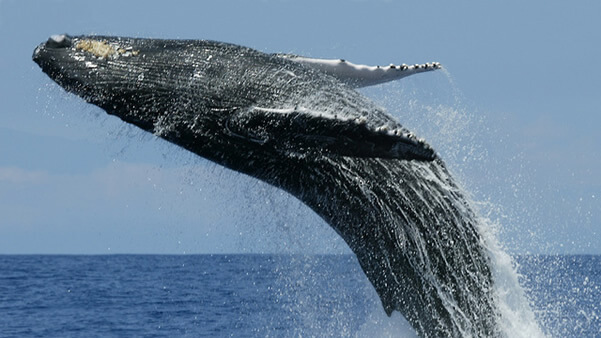

Blue Whale!
The blue whale (Balaenoptera musculus) is a marine mammal belonging to the baleen whale parvorder, Mysticeti. At up to 29.9 meters (98 ft) in length and with a maximum recorded weight of 173 tonnes (190 short tons), it is the largest animal known to have ever existed..